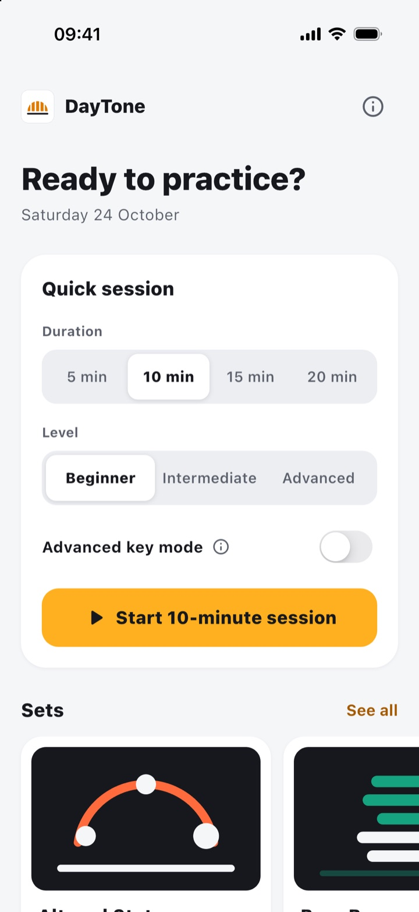
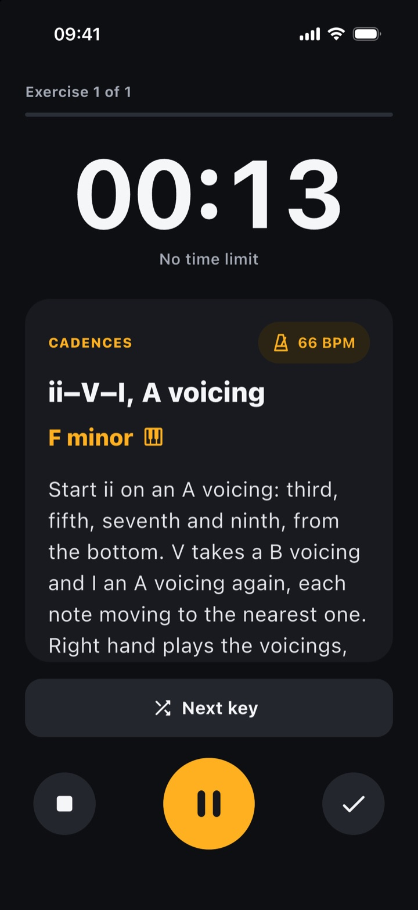
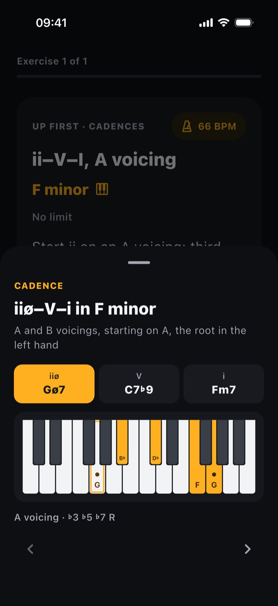
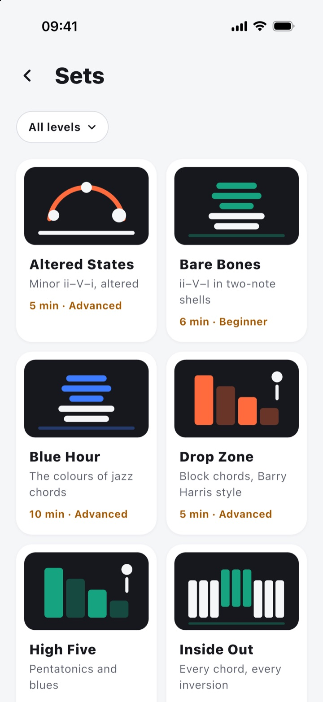
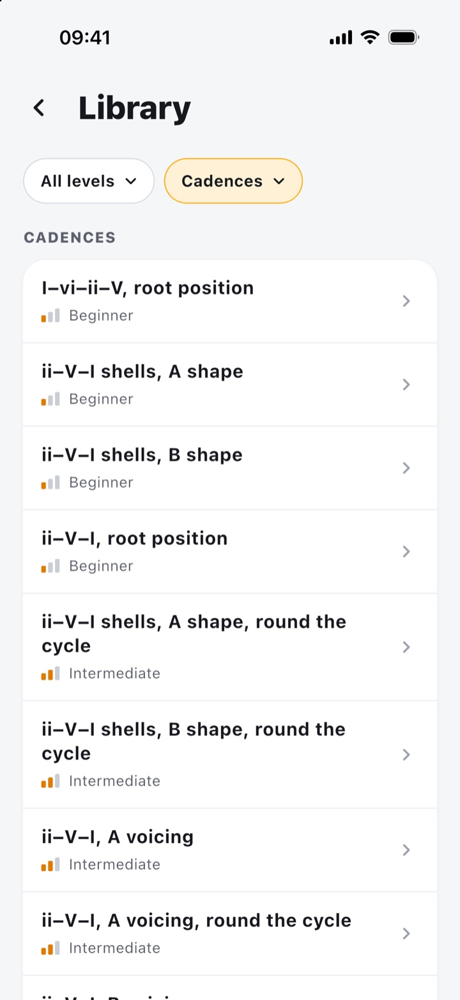

Quick session
Choose 5, 10, 15 or 20 minutes and your level. DayTone builds a session of short drills, each timed, with a cue when it is time to move on.
Beginner to advancedPiano practice, every day
DayTone turns a few spare minutes into focused piano practice: scales, chords and jazz cadences, drawn in a new key every time, with a timer and a metronome to keep you honest.
For iPhone, and coming very soon to Android. No account, no tracking, works offline.

Three ways to practise
You already know the technique. DayTone gives you the repetitions, in keys you would never have chosen yourself.
Choose 5, 10, 15 or 20 minutes and your level. DayTone builds a session of short drills, each timed, with a cue when it is time to move on.
Beginner to advancedThemed sessions of fixed length: Blue Hour for jazz chords, Bare Bones for two-note shells, High Five for pentatonics and blues, and more.
11 sets to start withStay on one exercise as long as you like. When a key feels easy, tap Next key: a new one, never the same twice in a row. Cycle exercises go down a fifth instead.
No time limitSee every voicing
Every exercise shows its key, scale or chord on a keyboard, voiced exactly as the instructions say. Try it with a ii–V–I.
ii–V–I in C major
Made for the music stand
The player turns dark so it does not glare on the stand, keeps the screen awake, and clicks a metronome at each exercise's tempo.




What is inside
Privacy
No history, no streaks, no scores. Every session starts fresh, and DayTone keeps nothing but the fact that you have seen its introduction.
DayTone is coming to iPhone, and very soon to Android.